6.2 – DANMARKS SEVÆRDIGHEDER
sidde 177
Seværdigheder
Et stort antal danske og udenlandske turister vælger hvert år at holde ferie i Danmark. Ifølge Danmarks nationale turismeorganisation VisitDenmark blev der i 2025 registreret 68 millioner overnatninger på hoteller, vandrerhjem, ferie centre, campingpladser og i feriehuse i Danmark. Heraf tegnede danskerne sig for 31 millioner, mens Tyskland var det klart største udenlandske marked med 22 millioner overnatninger. Langt de fleste overnatninger finder sted i kyst områderne, hvor turisterne ikke mindst kommer for at opleve den danske natur. Især Vesterhavet (Nordsøen) tiltrækker mange turister. De danske og uden landske turister i Danmark brugte i alt 168 milliarder kroner i 2024.
Mange turister vælger også at se og opleve en række af Danmarks seværdig heder, deriblandt de syv steder, som er optaget på verdensarvlisten af UNESCO (FN’s organisation for uddannelse, kultur, kommunikation og videnskab). Det kan eksempelvis være bygninger eller naturområder, som er af særlig stor betyd ning for hele verden.
Dette afsnit handler om nogle af Danmarks vigtigste seværdigheder.
Jylland
Skagen
Skagens Gren er Danmarks nordligste punkt. Her mødes de to have Skagerrak og Kattegat. Det betyder, at man kan stå med en fod i hvert hav og se bølgerne slå sammen. I 1795 måtte man lukke kirken syd for byen, fordi den blev begravet af alt det sand, som blæste ind over den. Tilbage er kun ”Den tilsandede Kirkes” tårn som et monument over naturens enorme kræfter. I perioden cirka 18751910 var Skagen om sommeren et internationalt mødested for malere som fx Anna Ancher, Michael Ancher og P.S. Krøyer. De søgte efter nye motiver, og dem fandt de i Skagen i form af fiskerne og deres hårde liv samt det særlige lys, der reflekteres af de lyse strande og havet på begge sider. De fleste af Skagensma lernes hovedværker kan ses på Skagens Museum.
Tirpitz og Atlantvolden
Ved Blåvand tæt ved Esbjerg i Vestjylland begyndte den nazistiske besættelses magt i 1944 at anlægge ’Batterie Vogelnest’ (Batteri Fuglereden) – også kaldet
Læremateriale Til Indfødsretsprøven
sidde 178
Tirpitz – med to enorme kanonbunkere. De skulle indgå i det kæmpemæssige forsvarsværk ’Atlantikwall’ (Atlantvolden), som tyskerne ville bygge langs hele den europæiske Atlanterhavskyst.
Danmarks placering ved Nordsøen gjorde landet til en del af dette forsvarsværk mod en mulig allieret invasion. Derfor blev der fra 1942 bygget mange bunkere og lagt landminer langs hele Jyllands vestkyst.
Tirpitz skulle have forsvaret indsejlingen til Vestkystens eneste større by Esbjerg med artilleri, der kunne skyde 55 kilometer. Men bunkeren nåede aldrig at blive færdig før Danmarks befrielse i maj 1945. Efter krigen forsøgte danske inge niørtropper uden held at sprænge den væk. Derfor står den og mange andre tyske bunkere fortsat som minde om besættelsestiden i Vestkystens storslåede klitlandskab.
Tirpitz åbnede som museum i 2017. En tunnel forbinder betonen i den ny arki tektur med den gamle kanonbunker med dens over tre meter tykke mure af armeret beton.Bunkeren Tirpitz og en kanonstilling ved Fanø indgik i det tyske forsvarsværk langs den danske vestkyst under besættelsen. Foto: Tue Schou Pedersen.
Bunkeren Tirpitz og en kanonstilling ved Fanø indgik i det tyske forsvarsværk langs den danske vestkyst under besættelsen. Foto: Tue Schou Pedersen.
Den Gamle By
Dele af Købstadsmuseet i Aarhus – kaldet Den Gamle By – er en model af en lille dansk by, som den kunne have set ud i 1800-tallet. Den består af cirka 75 huse, som er genopført fra hele Danmark. De genopførte huse stammer fra perioden 1550-1900, og museet har løbende udvidet med tre nye kvarterer med huse og butikker fra de seneste 100 år. Der er således også dele af Den Gamle By, som viser, hvordan en dansk by så ud fra 1927 til 2014.
Læremateriale Til Indfødsretsprøven
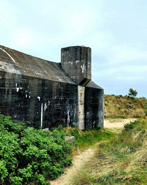
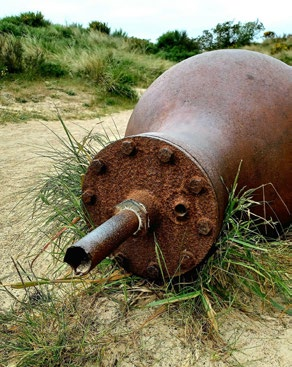
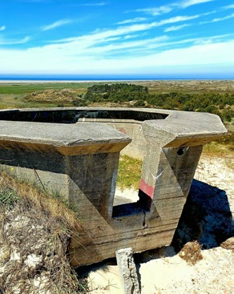
sidde 179
Moesgaard Museum
Den spektakulære museumsbygning fra 2014, der er tegnet af Henning Larsens arkitektstue i samarbejde med Kristine Jensens tegnestue, ligger lidt syd for Aarhus. Museets udstillinger indeholder især fund fra Danmarks oldtid (det vil sige stenalder, bronzealder og jernalder) samt fra vikingetiden. Blandt andet finder man Grauballemanden, der er verdens bedst bevarede moselig. Omkring 290 før Kristus (i jernalderen) fik han halsen skåret over. Når liget er så velbe varet, skyldes det de kemiske processer i den mose i Øst-Jylland, som han blev lagt i. Da han blev dræbt, var han 34 år gammel, og sandsynligvis blev han ofret til en gud, som man troede boede i mosens dyb.
Vadehavet
Vadehavet, som følger kysten fra det nordlige Holland over Tyskland og op til Blåvandshuk i det syd-vestlige Jylland, er 500 km langt. Det er verdens største sammenhængende vadehavslandskab og et af de ti vigtigste vådområder i hele verden. To gange i døgnet pumper tidevandet vand ind (så det bliver højvande) og ud (så det bliver lavvande) af Vadehavet. Det giver næring i form af alger og plankton til en utrolig mængde fisk, muslinger, orme og snegle, som igen er mad til de større dyr i fødekæden som fugle. For eksempel kan der være op til 60.000 snegle per kvadratmeter. Og Vadehavet fungerer derfor hvert forår og efterår som et kæmpe spisested for 10-12 millioner trækfugle. Herunder flere truede arter, der gør stop her på deres lange rejse fra syd til nord om foråret og nord til syd om efteråret. Blandt de største oplevelser ved Vadehavet er fænomenet ”Sort Sol”, når hundredtusindvis af stære slår sig til ro for natten og udfører en fascinerende fugleballet. Vadehavscentret sydvest for Ribe, der er tegnet af den danske arkitekt Dorthe Mandrup, fortæller historien om Vadehavet.Vadehavet ved højvande og lav
Vadehavet ved højvande og lavvande. Fotos: Tue Schou Pedersen og Naturstyrelsen.
Læremateriale Til Indfødsretsprøven
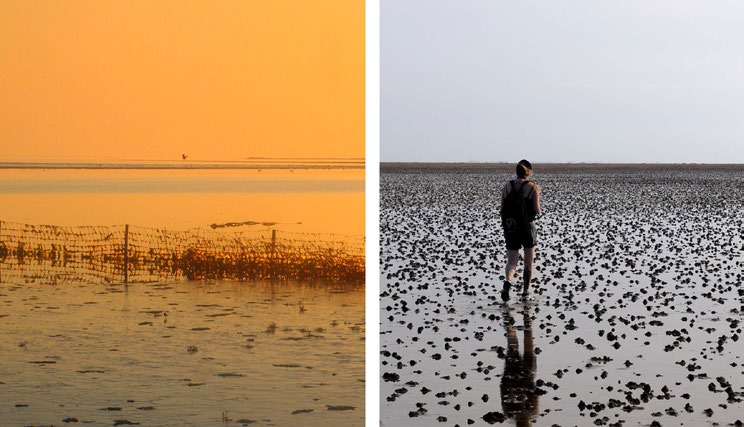
sidde 180
Ribe
Ribe opstod som markeds- og handelsplads i begyndelsen af 700-tallet og er dermed den ældste by i Danmark. Blandt de mange handlende fra Europa var også missionærer, der forsøgte at omvende den danske befolkning til kristen dommen. I 855 – cirka 100 år før Harald Blåtand som den første danske konge lod sig døbe som kristen – byggede den tyske missionær Ansgar en kirke i Ribe. Byen har i dag en særlig velbevaret bykerne fra middelalderen med gader i brosten og bindingsværkshuse. Mest central er dog Ribe Domkirke fra 11-, 12og 1300-tallet, som indeholder nogle meget store, farverige moderne glasmo saikker og kalkmalerier med fortællinger fra Biblen. De er lavet af den danske kunstner Carl-Henning Pedersen i perioden 1982-87.Ribe Domkirke. Foto: T
Ribe Domkirke. Foto: Tue Schou Pedersen.
Læremateriale Til Indfødsretsprøven
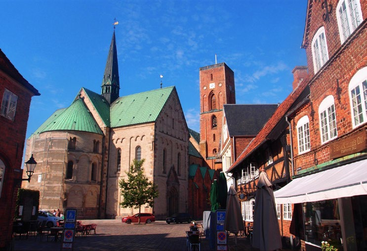
sidde 181
Rold Skov og Rebild Bakker
Rold Skov er Danmarks næststørste skov efter Grib Skov i Nordsjælland. Oprin delig bestod skoven primært af bøgetræer, men der er blevet plantet så mange grantræer og fyrtræer, at den i dag mest er nåleskov. Rebild Bakker er et land skab med hede og forkrøblede bøgetræer. En del af området blev i 1912 købt af dansk-amerikanere. Her finder man festpladsen, hvor man hvert år afholder en dansk-amerikansk fejring af USA's uafhængighedsdag den 4. juli. I Museum Rebild kan man i øvrigt blive klogere på de over 300.000 danskere, som særligt i årene 1868-1914 udvandrede til USA.
Rebild Bakker og Rold Skov er Nordeuropas største område med naturlige kilder af vand. Regnvandet siver ned gennem jorden til undergrundens kalk. Her renses vandet, indtil det løber op til overfladen igen, når det på et tidspunkt trykkes op igen til jordoverfladen af bakkernes vægt. Kalken i undergrunden fungerer som en svamp og opbevarer vandet, så det hele tiden har en temperatur på syv-otte grader – uanset årstiden. Blandt de mange kilder kan nævnes Ravnkilde, hvis rene vand smager helt vidunderligt.Fritgående får i Rebild
Fritgående får i Rebild Bakker.
Læremateriale Til Indfødsretsprøven
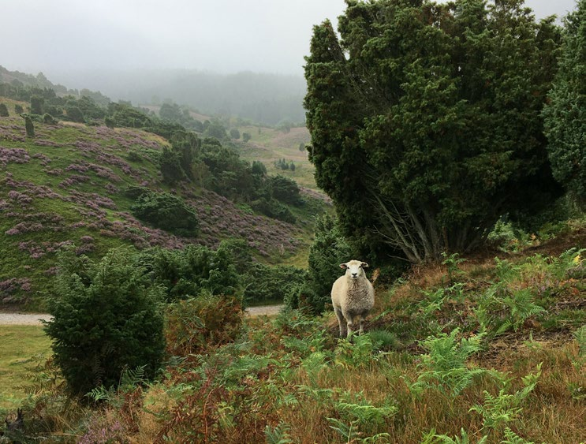
sidde 182
Øerne
Kronborg Slot
Danmarks historie er i høj grad præget af landets beliggenhed ved Østersøens indsejling. Den korteste vej ind i Østersøen går gennem Øresund. Byen Helsingør i Nordsjælland ligger der, hvor Øresund er smallest. Derfor har Helsingør været afgørende for at kunne kontrollere ind- og udsejlingen til Østersøen. Fra 1429 skulle skibe, der sejlede gennem Øresund, lægge til og betale skat, den såkaldte øresundstold. Tolden blev en af de vigtigste indtægter for den danske konge og den danske stat til man ophævede den i 1857.
For at sikre betalingen af told blev der bygget en borg ved navn Krogen, som i slutningen af 1500-tallet blev udbygget til Kronborg (og genopbygget i 1600tallet efter en brand). I Kronborgs underjordiske fæstningsværk kaldet ’kase matterne’ sidder en statue af sagnhelten Holger Danske. En kendt myte siger, at når Danmark trues af ydre fjender, vil han vågne til landets forsvar. Derfor tog en af de vigtigste modstandsgrupper under den tyske besættelse af Danmark 1940-45 navnet Holger Danske.
Kronborg Slot er især kendt i udlandet, fordi det danner rammen om den engelske dramatiker William Shakespeares teaterstykke ’The Tragedy of Hamlet, The Prince of Denmark’ (Tragedien om Hamlet, Prinsen af Danmark) fra 1603, ofte forkortet Hamlet. Stykket handler om hævn, tvivl og forholdet mellem livet og døden. Det er ofte citeret med den berømte sætning "To be or not to be; that is the question” (At være eller ikke at være; det er spørgsmålet). Sætningen siges af den levende prins Hamlet – symbolet på ’at være’ -, mens han holder et dødningehoved – symbol på døden ’ikke at være’ – i sin hånd. Kronborg v
Kronborg ved Helsingør.
Læremateriale Til Indfødsretsprøven
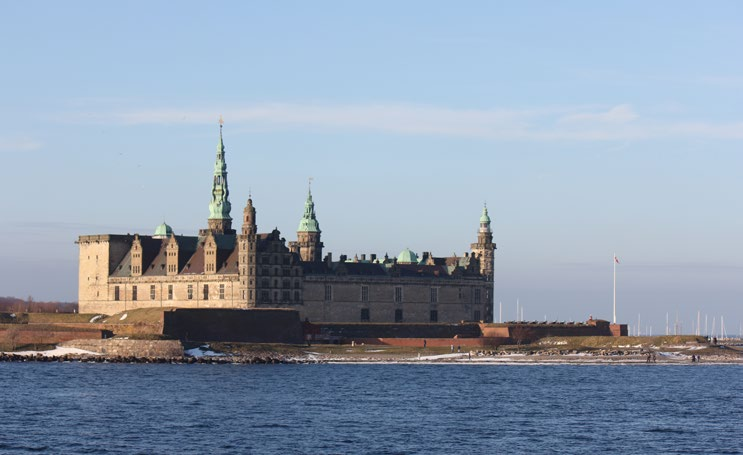
sidde 183
Roskilde Domkirke
Roskilde Domkirke regnes som Danmarks mest betydningsfulde kirke. Bygge riet begyndte omkring 1200 og er det første større murstensbyggeri i Skandina vien. Den er som mange andre af samtidens katedraler i Europa bygget i såkaldt gotisk stil, det vil sige, at den er præget af spidse, lodrette buer, som leder blikket opad mod himlen.
Siden begyndelsen af 1400-tallet har Roskilde Domkirke været den danske kongeslægts foretrukne gravkirke. Her ligger cirka 40 danske konger og dron ninger – flere end noget andet sted – begravet. Flere grave er placeret i rum, som løbende er blevet bygget til kirken i samtidens byggestil. Dermed er et besøg i domkirken også en oplevelse af mange århundreders arkitekturhistorie.
Dronning Margrethe 2.’s kommende grav findes i et af kirkens sidekapeller, og her vil hun en dag blive begravet ved siden af sine mange forgængere på den danske trone. Det sker i en sarkofag designet af kunstneren Bjørn Nørgaard, som også lavede gobelinerne til Riddersalen på Christiansborg. Konge- og dronningegrave i Roskilde Domkirke, her kong Christian den 4. (f. 1577, r. 1588-1648) o
Konge- og dronningegrave i Roskilde Domkirke, her kong Christian 4. (f. 1577, r. 1588-1648) og dronning Anna Cathrine (1577-1612) samt kong Frederik 3. (f. 1609, r. 1648-70) og dronning Sophie Amalie (1628-85). Foto: Tue Schou Pedersen.
Læremateriale Til Indfødsretsprøven
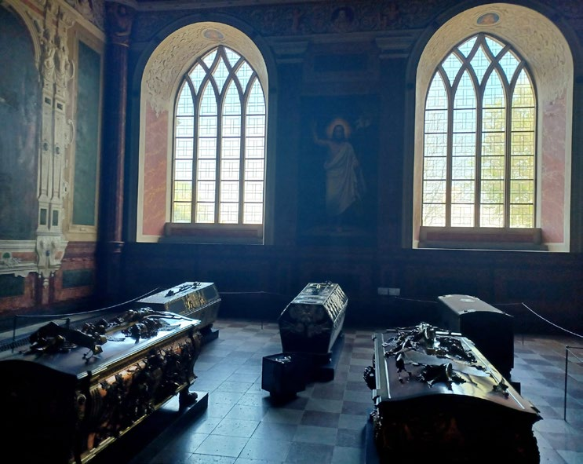
sidde 184
Stevns Klint
Den op til 40 meter høje klint på Østsjælland ud til Østersøen er opbygget gennem millioner af år af ældgamle lag af hvidgrå kalk, hvidt kridt og flint. Midt på klinten ses en sort ”streg” i form af et 5-20 cm lag af fiskeler, der er cirka 65,5 millioner år gammelt. Tydeligere end nogen andre steder i verden fortæller dette om en af de største naturkatastrofer i Jordens historie. Askelaget skyldes nemlig et meteornedslag i Mexico, der spredte død og ødelæggelse over hele verden. Måske er dette også årsagen til, at dinosaurerne og halvdelen af alle jordens dyrearter blev udslettet.
Højerup kirke fra 1200-tallet blev bygget i god afstand fra klinten. Men alligevel styrtede noget af kirken i havet i 1928, fordi bølgerne i tidens løb har reduceret klinten. I dag har man sørget for at beskytte kysten og dermed kirken for flere nedstyrtninger.
Møns Klint
Møns Klint ligger, som navnet siger på øen Møn i Østersøen. De høje kridt skrænter er under konstant foran dring, fordi havet spiser af klinten. Dronningestolen på 128 meter er klintens højeste punkt. Geocenter Møns Klint fortæller om klintens tilbli velse for 70 millioner år siden. I havet levede der alger med et skelet af kalk. Når algerne døde, faldt kalken ned på havbunden, hvor der over millioner af år opstod et tykt lag af kridt fra kalken. Siden ændrede klodens udseende sig meget, hvor landmassen hævede sig. Og i istiden skubbede iskapperne kalken sammen i et kæmpe bjerg, der blev til Møns Klint. Resterne af nogle af de dyr, der levede i havet for 70 millioner år siden, finder man i dag langs klintestranden som såkaldte fossiler. Det gælder især søpindsvin, men man finder også eksempelvis tænder fra hajer, og der er også fossiler af blæk sprutter. For at komme fra toppen af klinten og ned på stranden kan man bruge Maglevandstrappen, der med 497 trin er Danmarks længste trappe.
H.C. Andersens Hus
I 2021 åbnede et helt nyt museum om digteren og hans elskede eventyr i Odenses H.C. Andersen-kvarter. Det er tegnet af den japanske arkitekt Kengo Kuma, og ambitionen har været at give de besøgende en mangesidig kunstnerisk ople velse med lyd, lys og billeder. Via en såkaldt biografisk rampe kommer man ned under jorden, hvor eventyrene kan opleves. Indgangen til museet finder man lige ved det lille, gule hus fra 1799, hvor digteren sandsynligvis blev født i 1805.Møns Klint.
Møns Klint. Foto: Bob Collowan
Læremateriale Til Indfødsretsprøven
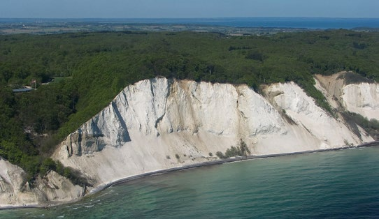
sidde 185
Hammershus
Borgen Hammershus blev bygget i 1200-tallet af ærkebispen i Lund i Skåne. Frem til 1500-tallet var det kirken, der ejede store dele af Bornholm. Hammershus er placeret på en ensom klippe godt 70 meter over havets overflade og var dermed nem at forsvare. I 1743 blev Hammershus forladt, da opfindelsen af kanoner og andre nye våben gjorde Hammershus mindre relevant. Den blev herefter brugt som stenbrud. Det vil sige, at befolkningen i lokalområdet brugte dens byggesten til at bygge huse og andre nye bygninger. I dag er Hammershus Nordeuropas største borgruin.
Østerlars Kirke
Bornholm er ikke mindst kendt for sine fire rundkirker. Østerlars Kirke fra cirka 1150 er den største og måske også den ældste. Den var naturligvis kirke for lokale beboere, men samtidig er den bygget som tilflugtssted og forsvarsværk mod fjender. Dem, der forsvarede kirken, befandt sig oppe i kirkens øvre etager. De smalle, runde trapper og gange gjorde det svært for fjenderne at komme derop – i hvert fald mere end én ad gangen. Ruinerne af Hammerhus på Bornholm. Foto: Tue Schou Pederse
Ruinerne af Hammerhus på Bornholm. Foto: Tue Schou Pedersen.Østerlars Rundkirke på Bornholm. Foto: Tue
Østerlars Rundkirke på Bornholm. Foto: Tue Schou Pedersen.
Læremateriale Til Indfødsretsprøven
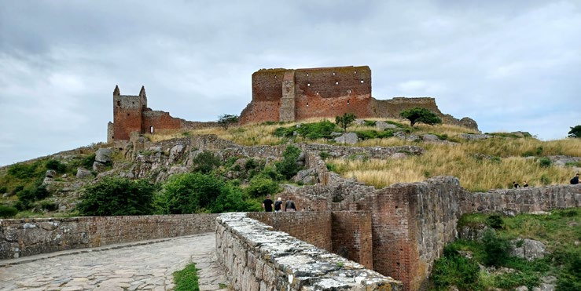
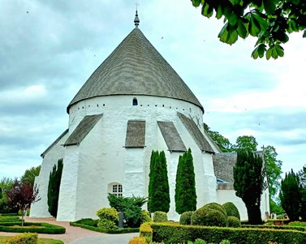
sidde 186
København
Navnet København betyder oprindelig ”Købmændenes Havn”. I 1000-tallet var byen et fiskerleje, der hed Hafn (Havn). I 1167 byggede Roskildes biskop Absalon en borg på stedet. Byen fortsatte med at tilhøre Roskildes biskop frem til 1416, hvor den blev overtaget af kongen. At København voksede frem som landets største by har især at gøre med dens placering ved Øresund og dermed de store, internationale handelsruter ind og ud af Østersøen. Derudover ligger byen i læ af Amager og har dermed en naturligt beskyttet havn. Den korte afstand (cirka 40 km) til Kronborg i Helsingør gjorde endvidere København til en oplagt bastion for, at krigsflåden kunne understøtte bevogtningen af ind- og udsejlingen af skibe gennem sundet. I middelalderen (ca. 1050-1500) rejste kongen det meste af tiden rundt i landet med sine embedsmænd og soldater. Men i løbet af 15og 1600-tallet blev København efterhånden hans faste residensby og dermed rigets ubestridte hovedstad. Det var ikke mindst i Christian 4.'s regeringstid (1588-1648), at København voksede frem til en europæisk storby.
Christian 4.’s bygningsværker i København
Den byggeglade konge satte i 1600tallet sit præg på København med en lang række markante bygninger. Den måske mest kendte og elskede af hans bygninger er Rundetårn fra 1642. Det er 41,55 meter højt og er berømt for den 200 meter lange spiralgang, der fører op til udsigts platformen. Her ses bogstaverne RFP, som er forkortelse af Christian 4.’s motto – det latinske Regna firmat pietas (Fromhed styrker rigerne).
Christian 4. købte i begyndelsen af 1600-tallet flere private grunde uden for Københavns daværende volde og skabte Kongens Have. Den har siden 1770’erne har været åben for alle, og i dag er den en af Københavns mest populære parker. I haven byggede han et lille lysthus, der løbende blev udbygget og i 1634 stod færdigt som Rosenborg Slot.Rundetårn i København. Foto: Tue Schou Pedersen.
Rundetårn i København. Foto: Tue Schou Pedersen.Rosenborg Slot i København. Foto: Konge
Rosenborg Slot i København. Foto: Kongernes Samling.
Læremateriale Til Indfødsretsprøven
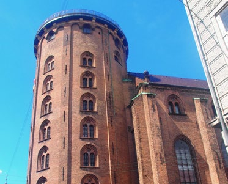
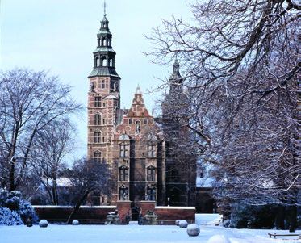
sidde 187
Kronjuvelerne findes i Skatkammeret på Rosenborg og består primært af fire store sæt af smykker. Dronningen bærer dem normalt til nytårskuren samt ved statsbesøg og andre store begivenheder. I Skatkammeret ses også de såkaldte kronregalier, nemlig især rigsæblet og scepteret, der symboliserer kongernes eller dronningernes magt og værdighed.
Kongen ønskede at gøre København til et europæisk handelscentrum, og derfor byggede han Børsen, som stod færdig i 1640. Børsens kendetegn er Dragespiret med de fire dragehaler, der snor sig om hinanden. Det skal efter sigende beskytte huset mod fjendtlige angreb og ildebrand. Det beskyttede dog ikke bedre, end at halvdelen af bygningen, inklusiv Dragespiret, blev ødelagt af en stor brand i april 2024.
Det unikke kvarter Nyboder skyldes også Christian 4. Han besluttede i 1631, at der skulle bygges gode boliger til flådens soldater, og bydelen omfatter 200 rækkehuse på hver cirka 40 kvadratmeter. I 1700-tallet talte Nyboder 6.000 indbyggere; i dag bor her godt 2.000 personer med tilknytning til Forsvaret.
Amalienborg Slot
Amalienborg er kongefa miliens residens i Køben havn. Slottet har navn efter dronning Sophie Amalie (1628-85), som var gift med Frederik 3. Dronningen fik anlagt et slot, som hun opkaldte efter sig selv: Sophie Amalienborg. Slottet brændte ned i 1689. Det nuværende slot på grunden – hvor navnet er forkortet til Amalienborg – har fire næsten ens palæer, der blev bygget af rige adelsfamilier i 1700-tallet. Faktisk var det ikke meningen, at kongefa milien skulle bo på Amalien borg. Men da Christiansborg brændte første gang i 1794, stod den uden sted at bo og købte derfor Amalien borg. Det er fra sit modtagelsesværelse i det ene palæ, at kongen hver nytårsaften kl. 18 holder sin nytårstale. På særlige dage i kongehuset er der tradition for, at kongen og familien lader sig hylde fra palæets balkon.
Den Kongelige Livgarde med de store bjørneskindshuer har vagtskifte på Amalienborg hver dag kl. 12.00. Ved særlige lejligheder, eksempelvis på kongens fødselsdag, er Livgarden i røde uniformer. Ellers er garderne i blåt.Amalienborg set fra lu
Amalienborg set fra luften. Foto: Rob Deutscher.
Læremateriale Til Indfødsretsprøven
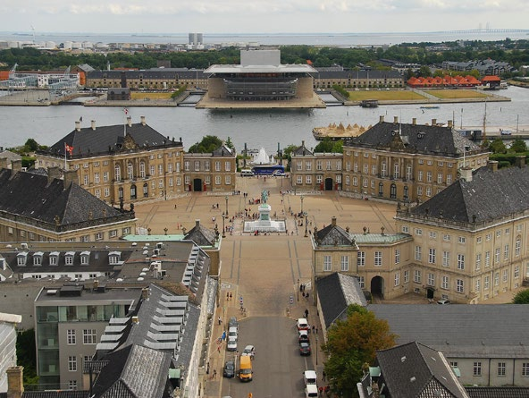
sidde 188
Tivoli
Da Tivoli åbnede i 1843, var der nok ingen, der havde troet, at der var skabt en forlystelsespark, der ville blive kendt i store dele af udlandet. Danmarks mest besøgte turistattraktion er kendt for sin eksotiske arkitektur og de historiske bygninger. Men derudover er der de fine haver og forlystelser som fx den gamle trærutsjebane fra 1914. Om aftenen skaber tusindvis af farvede lys en eventyrlig stemning. Endelig er der Pantomimeteatret, hvor de ældste af teatrets pantomi meforestillinger er mere end 200 år gamle.
Den lille Havfrue
Inspirationen til ’Den lille Havfrue’ kom fra H.C. Ander sens eventyr fra 1837 af samme navn. Det handler om en havfrue, der bliver forelsket i en prins, som hun ikke kan få. Denne skulptur fra 1913, som sidder på en sten i Københavns Havn, er kun 125 cm høj, men den er en af Danmarks mest kendte og besøgte turistattraktioner. ”Den lille Havfrue” har flere gange været udsat for hærværk for eksempel ved, at nogen har malet den med politiske budskaber eller savet dens hoved eller arme af.Tivoli København en sommeraften. Fot
Tivoli København en sommeraften. Foto: Helena Lundqvist/ Ritzau Scanpix.Statuen af Den Lille Havfrue ved Lan
Statuen af Den Lille Havfrue ved Langelinie i København. Foto: Tue Schou Pedersen.
Læremateriale Til Indfødsretsprøven
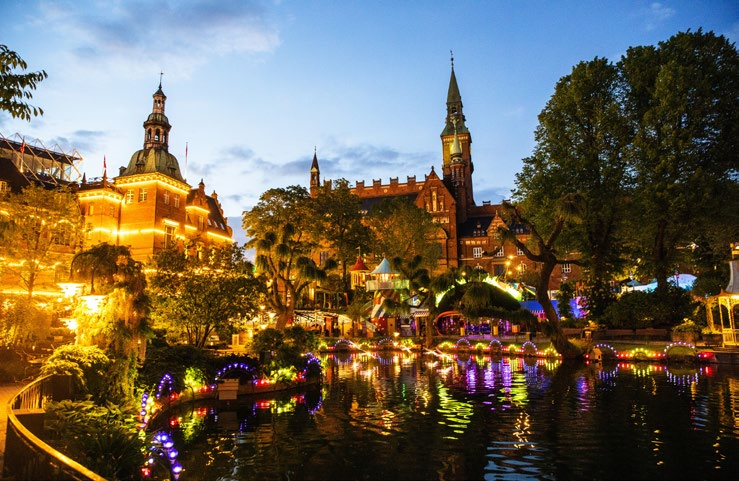
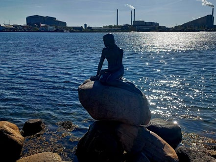
sidde 189
Ny arkitektur i København
København har udviklet sig enormt i de seneste årtier med en række spæn dende byggerier, der er skabt af danske arkitekter. Det er eksempelvis Henning Larsens Operahus fra 2005 med et etageareal på 41.000 kvadratmeter, fordelt på 14 etager. De tre store lysskulpturer i foyeren er af Olafur Eliasson, mens de fire bronzerelieffer er udført af Per Kirkeby.
Den Sorte Diamant (bibliotek) fra 1999 er tegnet af Schmidt Hammer Lassen og har en stor loftudsmykning af Per Kirkeby. FN Byen på Marmormolen tegnet af arkitektfirmaet 3XN er designet som en ottetakket stjerne. Her findes 11 FNorganisationer med 1.500 ansatte, der kommer fra mere end 100 lande.
Det spektakulære boligbyggeri 8TALLET i Ørestad på Amager er tegnet af Bjarke Ingels Group (BIG) og blev i 2011 kåret som verdens bedste boligbyggeri.Boligbyggeriet 8tallet
Boligbyggeriet 8tallet i Ørestad på Amager: Foto: Torben Huss/Ritzau Scanpix.
Læremateriale Til Indfødsretsprøven
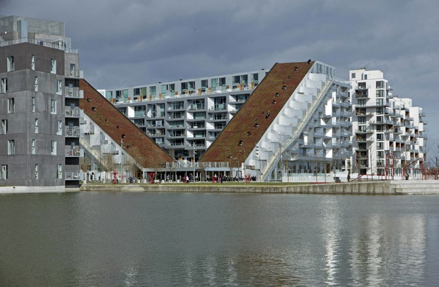
Fonte: Læremateriale til Indfødsretsprøven, SIRI.